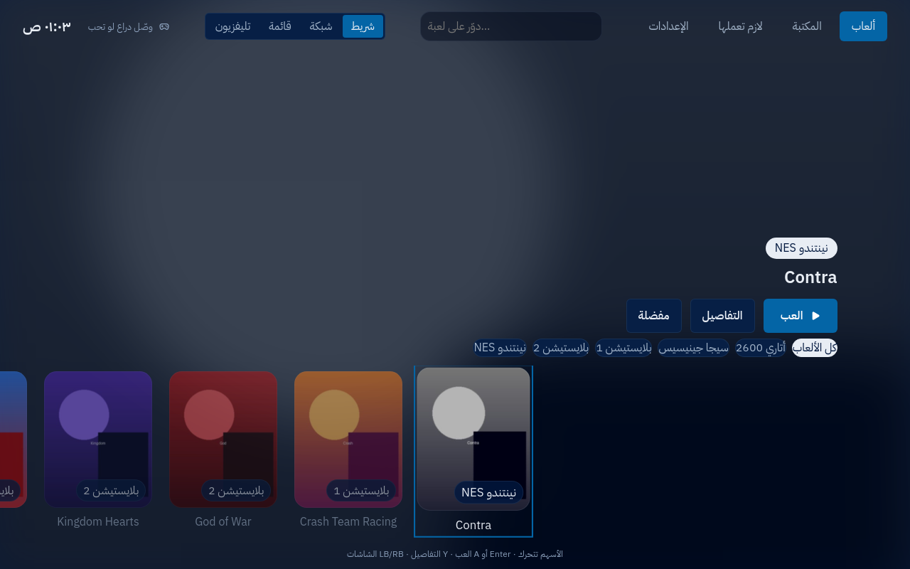
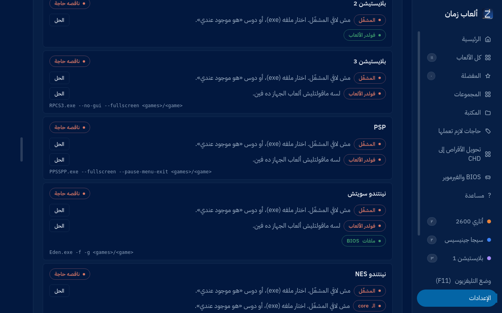
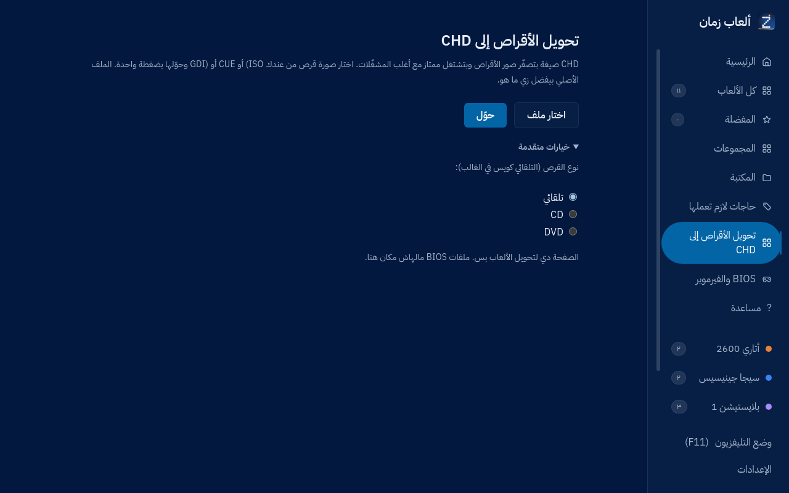

زمان جيمز بيلمّ ألعاب أجهزتك القديمة — من أتاري لحد إكس بوكس 360 — في مكتبة واحدة شكلها يفتح النفس، وبيشغّلها لك بضغطة واحدة. من غير تعقيد، ومن غير ما تبقى مهندس.
برنامج ويندوز بيجيب كل ألعابك القديمة تحت سقف واحد. إنت بتقوله فولدر ألعابك فين، وهو بيلمّها ويرتّبها بالأغلفة والأجهزة، ولما تدوس "العب" بيفتح لك المحاكي المناسب على طول. المحاكيات نفسها؟ بيتنزّل من مواقعها الرسمية بضغطة واحدة، وبنتأكد إن الملف أصلي بالبصمة قبل ما يتثبت. إنت صاحب مكتبتك: البرنامج مبينزّلش ألعاب ولا ملفات BIOS — دي بتجيبها إنت، وهو بيساعدك تعرف الناقص.
مش مجرد قائمة ألعاب — ده بيت كامل لمكتبتك، من أول الغلاف لحد زرار التشغيل.

كل ألعابك مرتّبة بالأغلفة، وفلاتر حسب الجهاز، وبحث سريع، وشريط "كمّل اللعب" بيرجعك لآخر حتة وقفت عندها. شغال بالكيبورد والماوس ويد التحكم.
١٣ محاكي بيتثبّتوا من مواقعهم الرسمية — Stella وRetroArch وDuckStation وPCSX2 وPPSSPP وRPCS3 وغيرهم — وبنتأكد من بصمة كل ملف قبل التثبيت.
أول تشغيل بيظبط دقة كل محاكي تلقائيًا على قد كرت الشاشة عندك — من غير ما تفتح ملف إعدادات واحد. ولو غيّرت رأيك؟ اختيارك إنت هو اللي بيمشي دايمًا.
وضع التليفزيون (F11) بيحوّل الشاشة لواجهة كبيرة تتشاف من الكنبة، ويد التحكم شغالة: إكس بوكس وبلايستيشن 3 و4 و5 وسويتش برو وأي يد عادية.
كل زرار وكل رسالة بالمصري الواضح — مش ترجمة حرفية نايمة. البرنامج بيقولك بيحصل إيه وبيقترح عليك الخطوة الجاية.

حاجة مش شغالة؟ الصفحة دي بتقولك الناقص بالظبط لكل جهاز: محاكي مش متثبت؟ فولدر الألعاب مش متظبط؟ ملف BIOS مش موجود؟ ومع كل حاجة زرار «الحل».

صور الأقراص (ISO وCUE وGDI) تتحول لصيغة CHD المضغوطة بضغطة واحدة وبشريط تقدّم مباشر. الملف الأصلي بيفضل زي ما هو، والنتيجة بتدخل مكتبتك لوحدها.
بكل صراحة: في أجهزة بتشتغل من أول دقيقة، وأجهزة محتاجة ملفات نظام بتجيبها إنت من جهازك القديم. البرنامج بيراجع الملفات بالبصمة وبيقولك إيه الناقص بالاسم.
سبع خطوات بس، وأغلبهم بيحصل مرة واحدة في العمر.
من صفحة الإصدارات نزّل ZamanGames-Setup.exe — ملف واحد بس، مش أجزاء ولا فك ضغط.
دبل كليك وكمّل التثبيت زي أي برنامج. التثبيت شغال على ويندوز 10 و11، ولو جهازك ناقصه حزمة Visual C++ من مايكروسوفت، البرنامج بيحمّلها لك من مصدرها الرسمي لوحده.
هيلاقيك جولة تعريفية قصيرة، وبعدين بيظبط إعدادات الجرافيكس لكل محاكي تلقائيًا على قد جهازك — من غير ما تدخل في أي تفاصيل فنية.
من الإعدادات، ضيف فولدر ألعابك (أو أكتر من فولدر). البرنامج بيفحصهم ويلمّ الألعاب في المكتبة بالأغلفة والأسماء والأجهزة — ولو ضفت ألعاب جديدة بعدين، بيتلمّوا مع أول فحص.
من صفحة المحاكيات دوس «ثبّت» جنب أي جهاز. التنزيل بيحصل من الموقع الرسمي للمحاكي بس، وبصمة الملف بتتراجع قبل التثبيت — لو في حاجة مش مظبوطة، التثبيت بيقف.
أجهزة زي بلايستيشن 1 و2 محتاجة ملفات BIOS حقوقها محمية، فإنت اللي بتطلّعها من جهازك إنت. حطّها في فولدر BIOS من جوّه البرنامج، وهو يراجعها بالبصمة ويقولك إيه الناقص بالاسم. البرنامج مبيجيبش الملفات دي من أي مكان — دي قاعدة مش هتتغير.
خلاص. اختار اللعبة، دوس العب، ولو عندك يد تحكم وصّلها على طول. ولو التليفزيون قدامك، دوس F11 وخدها من الكنبة.
البرنامج نفسه، أدلة من عندنا تتطبع، والروابط الرسمية لأي حاجة تانية — من غير ما تدور.
ملف تثبيت واحد لويندوز 10 و11. التحميل من صفحة الإصدارات الرسمية على GitHub — دايمًا بتوصلك أحدث نسخة.
نفس شرح الموقع بس في ورق مرتّب — للي بيحب يقلّب جنب الجهاز.
لو ويندوز ناقصه حزمة Visual C++ Redistributable من مايكروسوفت، البرنامج بيحمّلها لك تلقائيًا من مصدرها الرسمي أول تشغيل. ولو حبيت تثبّتها بنفسك قبل كده، ده رابطها الرسمي:
الفيديو التعريفي للبرنامج، وتحته شروحات قصيرة لأهم الخطوات.
الحكاية كلها: مكتبة واحدة، تثبيت بضغطة، وغلاف لكل لعبة.
من ملف التثبيت لحد ما المكتبة تجهز.
إزاي المكتبة بتتلمّ، وإزاي تجهّز بلايستيشن 1 و2.